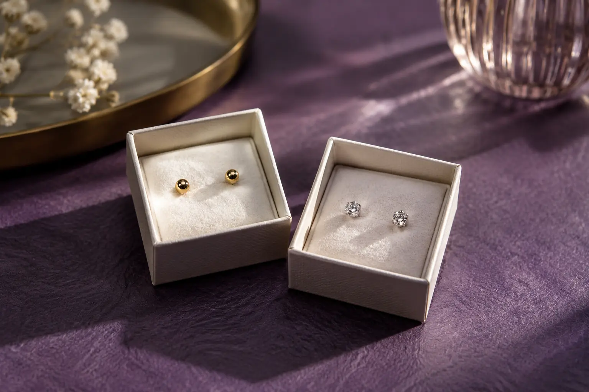

Auskarų vėrimo kaina ir trukmė: papuošalas, vieta ir kontrolinis vizitas
Autorius: Madbeauty redakcija · Numatyta 2026 m. lapkričio 21 d. 10:00 (Lietuvos laiku)
Sužinokite, ką įtraukti lyginant auskarų vėrimo kainą ir vizito laiką. Du 2026-10-09 patikrinti meniu pavyzdžiai parodo, kaip skiriasi paslaugos apimtis ir papuošalo įtraukimas.

Vienos standartinės auskarų vėrimo kainos ar trukmės nėra: pasiūlymas gali priklausyti nuo vėrimo vietos, vienos ar abiejų ausų, pasirinktos sistemos ir to, ar į kainą įtrauktas papuošalas. 2026-10-09 patikrinti du Lietuvos teikėjų meniu rodo, kodėl verta lyginti ne vien galutinį skaičių, bet ir tai, kas į jį įeina. Tai datuoti konkrečių teikėjų pavyzdžiai, ne Madbeauty pasiūla ar visos rinkos kainos.
Darbo ir papuošalo sudėtis
Jo Mi meniu nurodo 20 € už „Standard/Upper lobe“, 35 € už „Helix/Conch“ ir 40 € už „Industrial“ vėrimą. Šiame kainyne į nurodytą vėrimo kainą įtrauktas paprastas titaninis papuošalas, o kotelio keitimas įrašytas atskirai – 10 €. Tai konkretaus teikėjo kainodara, o ne taisyklė, kad papuošalas visur įskaičiuotas. Jo Mi vėrimo meniu.
ODA klinikos meniu kainą pateikia pagal sistemą ir vėrimų skaičių: „Studex75“ – 19 € už vieną ausį arba 30 € už abi, o „Inverness“ – atitinkamai 25 € arba 40 €. Prie šių pasiūlymų nurodyta 15 min. trukmė. Meniu nepaaiškina, ar papuošalas įskaičiuotas, todėl vien iš šios informacijos bendros galutinės sumos nustatyti negalima. Penkiolika minučių yra šio teikėjo nurodytas laikas, ne visų vėrimų trukmės standartas. ODA klinikos vėrimo meniu.
Šių dviejų kainynų negalima tiesiogiai surikiuoti nuo pigiausio iki brangiausio: vienas kainą skirsto pagal vėrimo vietas, kitas – pagal sistemą ir vienos ar abiejų ausų pasirinkimą. Papuošalo etiketė taip pat neatsako į visus klausimus. Pradinio papuošalo pasirinkimo rekomendacijose svarbi ir konkreti medžiagos informacija, forma, dydis, paviršius bei sujungimas; vien pavadinimas „titanas“ nepatvirtina visų šių detalių. Association of Professional Piercers rekomendacijos apie pradinius papuošalus.
Vėrimo vieta ir vizito laikas
Prieš lygindami pasiūlymus užrašykite, kokios vietos vėrimo reikia ir ar kalbama apie vieną, ar abi ausis. Tada patikrinkite, ar kaina apima pasirinktą papuošalą, ar nurodytas jo keitimo mokestis, ir ar skelbiamas laikas taikomas visam vizitui ar tik meniu įvardytai paslaugai. Jo Mi pateiktuose pavyzdžiuose laikas nenurodytas, todėl jo negalima patikimai palyginti su ODA nurodytomis 15 minučių.
Kontrolinis vizitas: atskira sąlyga
Peržiūrėtuose kainų įrašuose kontrolinio vizito įtraukimas nepažymėtas. Todėl jo nelaikykite įskaičiuotu vien dėl to, kad meniu nurodo vėrimo kainą. Pasiūlymą palyginkite pagal šias eilutes:
- vėrimo vieta ir vienos arba abiejų ausų apimtis;
- naudojama sistema ir teikėjo aiškiai nurodytas vizito laikas;
- ar papuošalas įtrauktas, kokia jo tiksli specifikacija ir ar keitimas kainuoja papildomai;
- ar kontrolinis vizitas ir po vizito suteikiama informacija įtraukti, ar aprašyti atskirai.
Kotelio keitimas ir kontrolinis vizitas yra skirtingos paslaugos: Jo Mi meniu nurodytas 10 € keitimas nepatvirtina, kad tai yra kontrolinis vizitas. Jei sąlyga neaprašyta, palyginimui jos kainos ar įtraukimo nepriskirkite. Šiame gide pateikti pavyzdžiai nepatvirtina, kad konkretus teikėjas šiuo metu priima registracijas Madbeauty kataloge; vietą, aktualų kainyną ir vizito sąlygas tikrinkite tiesiogiai.
Procedūrų aprašai kataloge: Auskarų vėrimas. Miestą ir realaus teikėjo pasiūlymą pasirinkite kataloge, kai tokia pasiūla pateikta.
Susiję gidai
Šaltiniai
- NVSC · grožio paslaugų sauga, 2026-09-17 · nvsc.lrv.lt
- NHS · infekcija po auskarų vėrimo · www.nhs.uk
- NVSC · teikėjo pasirinkimas ir instrukcijos · nvsc.lrv.lt
- Jo Mi: vėrimo meniu su įtrauktu papuošalu · jomitattoo.lt
- ODA klinika: vėrimo apimtis, atskiri papuošalai ir laikas · odaklinika.lt
- Association of Professional Piercers: initial jewellery · safepiercing.org
- Association of Professional Piercers: piercing guns · safepiercing.org